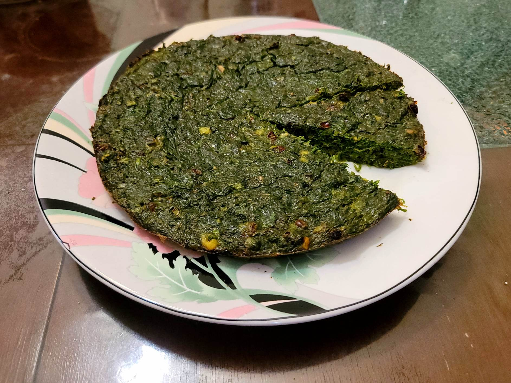

Kuku Sabzi

Ingredients:
- 5 Eggs
- 1 tbsp Butter
- 1 cup Cilantro, about 1 bunch
- 1 cup Parsley, about 1 bunch
- 1 cup Dill, about 1 bunch
- 1 cup Scallions, both whites and greens, about 1 bunch
- 1 tbsp Dried fenugreek
- 1/2 tsp Turmeric
- 1 tsp Salt, or to taste
- 1/2 tsp Black pepper
- 4 tbsp Walnuts, chopped
- 3 tbsp Dried barberries
Instructions:
- Preheat an oven to 375 degrees Fahrenheit. Grease a 9 inch pie pan with the butter.
- Place the herbs into a food processor and pulse until very fine. Then transfer to a bowl along with the rest of the ingredients. Mix to combine.
- Place into the greased pie pan and bake for 30-40 minutes, or until fully cooked.
- Allow to rest for about 5 minutes before transferring to a serving plate and slicing. Serve immediately with flat bread or rice.